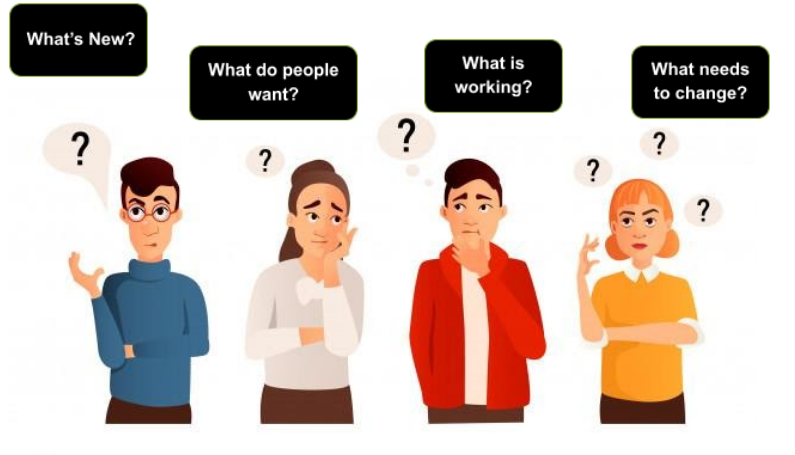
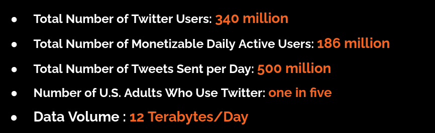

Welcome to Search.I.T’s documentation!¶
Indices and tables¶
Overview :¶
“What is New ?”,”What do people want ?”, “What is working ?”
are some of the questions businesses and researchers ask.Many times most of these are linked to discussions on Twitter .A deep dive into topics people discuss online, can give the businesses bounty of information to derive actionable insights . “Search.IT” tool is the answer. The tool would enable searching trends on Twitter feeds. Custom search phrases will be processed using the tools twitter feed processing engine to derive key topics. This means, customers will have the power to query a topic and get instant feedback on the related trends at the click of a button.
Top intents for the search text will be available using graphical visualization.
Why Twitter as a source for project?¶
Twitter is a Leading social platforms based on active users.We can access live data from actual people which is not derived from any big data repositry of any perticular company.
What If?¶
What if we can take this data from twitter and allow more inteactive summry visualization.Lets take a deep dive into the architecture. Please follow links below.
Contents:
Project Presentation: https://docs.google.com/presentation/d/1sUBOyNYSdUSjFvK7mEo8Qxa1q3Y7uNx92hCHvN5H8xk/edit?usp=sharing